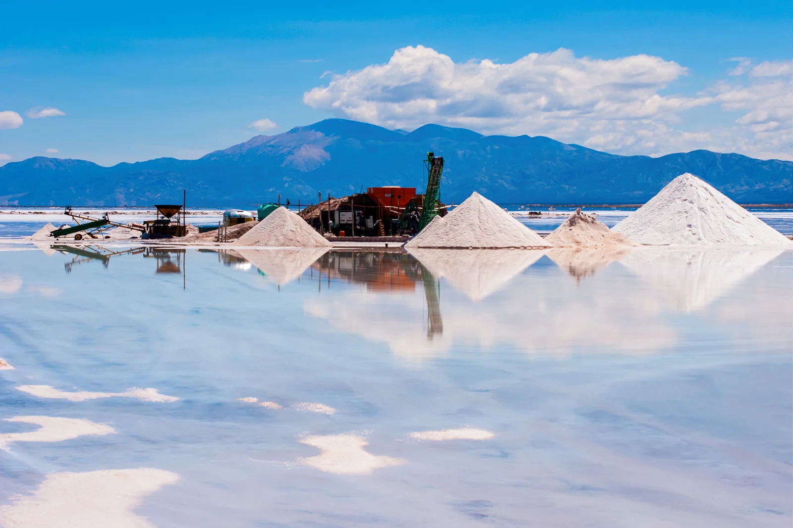

Premium Refined
Food & industrialWashed, recrystallised and dried to a tight specification. The grade that ends up in a water softener, a test tube or a food line.
- Low moisture
- Fine, free-flowing
- COA per batch
Sinai—Core
Sinai—Core
Crystal to Container
Eight chapters of premium Egyptian salt,
from North Sinai to the world.
or simply scroll down · best on a large wide screen · landscape
Fig. 0 — The export bag, assembled. Scroll to begin the story.
Scroll down / up — the bag moves with the story (scrub)
Kindly turn your device, or adjust your window size to achieve a suitable area with a landscape orientation. This is an old-school website, crafted for leisurely reading on a large wide screen.
El Arish · 31.13°N 33.80°E
Five grades of salt from one North Sinai coastline — evaporated by sun, graded in the laboratory, packed for the world.
Click to start or simply scroll ↓
01 — The source
Before it is washed, graded or printed, salt is weather. Sun on shallow water, wind doing the rest, a white crust forming at the edge of the pan.[1]

02 — The grades
Washed, recrystallised and dried to a tight specification. The grade that ends up in a water softener, a test tube or a food line.
Coarse, dependable, and priced for volume — chlorine plants, drilling, dye works, tanneries.
Road salt that arrives before the freeze — coordinated to municipal schedules and winter tenders.
Ultra-pure marine sodium chloride pressed for ion-exchange — no insolubles to blind a resin bed.
The raw end of the range — sun-dried, screened, loaded by the tonne for industrial and commercial use.
03 — Inside the bag
Scroll and the model comes apart: shell, liner, product, printed face. Each layer exists to solve one problem the sea creates.[4]
A tonne of salt is not a bag. It is a promise that the fourth layer tells the truth about the first three.
04 — The printed face
Keep scrolling and the bag turns a full circle: front print, side gusset, and the batch record on the back.[5]
| Printed field | Content |
|---|---|
| Brand | SinaiCore — Industrial Sea Salt |
| Net weight | 1,000 kg · 50 kg · 25 kg |
| Origin | Product of Egypt — North Sinai |
| Batch | Grade · moisture · batch no. · date |
| Handling | Lifting loops · keep dry · bottom discharge |
Per orderLogo placement, language and artwork are agreed before production, subject to minimum quantities.
05 — Formats


↔ Drag to compare
| Grade | NaCl | Moisture |
|---|---|---|
| Premium Refined | ≥ 99.5% | ≤ 0.2% |
| Industrial Washed | ≥ 98.5% | ≤ 3% |
| Winter Maintenance | ≥ 98.0% | — |
| Water Treatment | ≥ 99.5% | — |
| Marine | ≥ 97.0% | ≤ 4% |
06 — The map
The bag dissolves into a globe and the routes draw themselves: Europe, Asia, Africa, the Americas, Australia.[7]
Loaded at Arish. Cleared at Suez. Delivered where the water softens.
07 — Ports & documents
| Route | Port | Mode |
|---|---|---|
| FOB Arish | Arish, North Sinai | Bulk · charter |
| FOB Suez | Suez | 20ft · 40ft |
| FOB Port Said East | Al-Tafreaa | 20ft · 40ft |
Shipping noteBulk and charter shipments depend on port and vessel availability; container slots are confirmed per booking.
08 — The finale
Five products, one origin, one standard. Tell us the application and we will match the grade, the packing and the port.
Send the application, the volume and the destination port — we reply with a quotation and a sample plan.